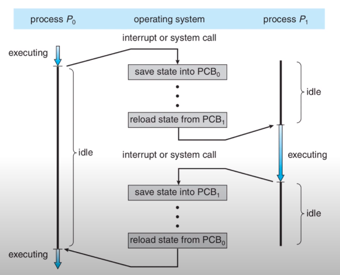
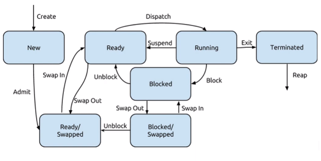
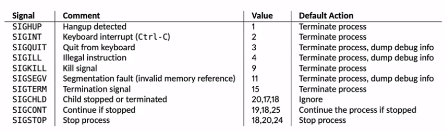

ECE 252 系统编程 in C
Table of Contents
1. L1: C
声明变量要尽量立即进行初始化(赋初值) , 这是很多bug的根源.
1.1. 全局变量
char g = 'z'; /* 尽量避免使用 */
1.2. 堆内存分配
void allocate_memory() { int* x = malloc(sizeof(int)); // sizeof 运算符*/ int* y =x; *x = 0; free(x); point_t* st = malloc(sizeof(point_t)); memset(st,0,sizeof(point_t)); st->x = 0; (*st).y = 0; return ; }
free 应该和malloc 配对. 并且只能 free 一块内存一次.
没有必要将返回的 void* 转换为 int* 之类的东西, void* 将自动适应任意类型的指针.
1.3. 数组
int stack_arr[10];
int* heap_arr = malloc( 10* sizeof(int) ); heap_arr[2] = 1; free(heap_arr);
初始化数组
#include<string.h> void init_arr(int *a, int capacity){ memset(a,0, capacity* sizeof(int)); }
1.4. 字符串
'\0'
1.5. 函数
通常将被修改的指针作为第一个参数:
int init_header(struct header*h, int v, float f);
1.6. errno
#include <errno.h> extern int errno ; /* 表示此变量在其它文件中定义 */
1.7. printf()
%d -- int i32 %lld -- long long i64 %u -- unsigned int %s -- char* %f %lf
1.8. 预处理
#define BUFFER_SIZE 1024 #define VAL (2 * 12 + 3) // 加括号!!!
1.9. 解析参数
int main(int argc, char** argv){ int count = atoi(argv[1]); }
atoi(): char* 转 int
2. L2: 中断&系统调用
为了执行程序,至少需要:
- 主存
- 系统总线
- 处理器
CPU 时计算机的大脑, 它重复地进行: "Fetch-Decode-Execute"这三个步骤, 不同的步骤可以同时进行,即流水线.
一些指令只能在supervisor模式下执行,在user模式下会出错. eg: 中断
常见的寄存器:
PC: 下一条指令 Status: 每个位表示状态/错误 instruction: 最近被fetch的指令 stack pointer:栈顶 通用寄存器
2.1. 中断
CPU需要数据,但有些数据的获取需要很长时间,eg:获取磁盘上的数据.
处理方法: 轮询Polling: 周期性地检查数据是否就绪.
中断: 当数据就绪后会收到通知.
中断的分类:
- 程序: 除以0, 对null解引用…
- Timer定时器
- 输入/输出
- 硬件错误: 主电源断电
大多数时候,CPU是需要处理收到的中断的. 此时会先保存当前的执行状态, 然后去执行中断处理程序, 最后恢复先前的状态.
有时候CPU会处于不可被中断的状态(临时).
两个中断可以是线性执行的, 也可以是高优先级中断打断了低优先级的中断.
2.2. Trap: "软中断"
trap是中断的一种吗?
ChatGPT: 在计算机编程中，“trap”（陷阱）通常是指一个中断或异常，也被称为软件中断。 它是由正在执行的程序或操作系统生成的，通常用于响应某些特定的事件或错误情况， 例如非法指令、除数为零、内存访问错误等等。 当一个程序触发一个trap时，处理器会停止当前正在执行的任务， 转而执行一段预定义的中断处理程序，来处理这个trap。 中断处理程序会在完成后返回原程序，使其可以继续执行。 因此，可以说“trap”是一种中断机制，用于让计算机处理特定的事件或错误情况。
trap可以用来实现系统调用, 其作用是在用户user模式下唤醒操作系统,从而进入kernel模式, kernel模式下可以直接操作硬件,有能力执行所有的指令.
系统调用的流程:
- user-mode:在栈上压入参数
- user-mode:跳转到系统调用函数
- user-mode:系统调用函数将其id放到指定位置
- user-mode:系统调用函数调用 "Trap" 指令.
- OS接受中断,从指定位置处解析id,切换到kernel-mode,
- OS调用id对应的中断处理程序.
- OS离开kernel-mode, 重新回到user-mode,并回到系统调用函数中.
- 从系统调用中返回.
#include <stdio.h> #include <stdlib.h> #include <string.h> #include <fcntl.h> #include <unistd.h> void print_tail_zero() { int z = '\0'; printf("%c is %d \n", '\0', z); return; } void read_file(int fd); int main(int argc, char** argv) { if( argc != 2 ){ printf("Usage: %s <filepath> \n",argv[0]); return EXIT_FAILURE; } int fd = open(argv[1],O_RDONLY); if (fd <0 ){ printf("Error: cannot open file: %s \n",argv[1]); return EXIT_FAILURE; } read_file(fd); close(fd); return 0; } void read_file(int fd){ const size_t buf_size = 256; char* buffer = malloc(buf_size); while(1) { // 0 == '\0' memset(buffer,0,buf_size); // <======= 每次读取之前要清空缓冲区!! int bytes_read = read(fd, buffer,buf_size-1); if (bytes_read == 0 ){ break; }else if (bytes_read < 0 ){ printf("Error: cannot read file.\n"); return; } printf("%s",buffer); } printf("\n"); free(buffer); }
3. L3: 文件系统
3.1. 文件的属性
- 文件名
- id
- 类型
- 物理位置
- 大小
- 保护位
- 时间,日期,UserID(所有者)
3.2. 文件操作
创建,删除, 读写,在文件中定位,截断(清除内容)
3.2.1. fopen
fopen(文件路径,"打开模式") -> FILE*
模式:
r: 只读w: 可以写入文件.若文件已经存在, 则覆盖内容.a: 追加写入文件r+: 可读可写.文件不存在则出错.写入只会覆盖当前文件指针位置.w+: 可读可写.不存在则创建. 文件存在内容则会被清空.a+: 可读可写.不存在则创建. 文件指针默认在尾部,写入总追加到末尾.
添加 x 可以让写入操作在文件已经存在时发出错误.
fclose(FILE*): 关闭文件
3.2.2. fseek()
int fseek(FILE *stream, 相对基准位置的offset, 基准位置);
基准位置: 文件开头 SEEK_SET , 当前位置 SEEK_CUR , 文件末尾 SEEK_END
rewind(FILE* ): 将文件指针重设为文件开头
3.2.3. remove()
删除文件.
- 仅在目录树中删除,并将其标记为删除.
- 直到最后一个打开此文件的程序关闭文件后, 文件才会被删除.
3.2.4. 文件锁 flock()
FILE* f = fopen("./file.c", "r"); int fd = fileno(f); // FILE* -> 文件描述符 int res = flock(fd, LOCK_EX); // exclusive 排它锁.
LOCKUN: 解锁
LOCKSH: 共享锁
3.2.5. 写入 fprintf()
fprintf(file, "%s", "hello");
3.2.6. 读取 fscanf()
fscanf(fp,文件内容的模式,写入的变量…) -> 成功写入变量的个数
while(fscanf(fp, "%d,%d\n",&i,&squared) == 2) { printf("i= %d, squared= %d",i,squared); }
3.3. 目录
目录是一个符号表, 将文件名映射到其目录条目.
目录操作:
- 搜索
- 添加文件
- 删除文件
- 列出目录内容
- 重命名文件
- 导航文件系统 (父目录,子目录..)
删除目录:
可以直接删除空目录
3.3.1. Symbolic Link
相当于一个Weak指针, 或者快捷方式.
(不是指向实际的目录条目, 而是指向符号表中的其它符号名)
源文件被删除, 则符号链接失效.
删除符号链接对源文件无影响
3.3.2. Hard Link
相当于Rc指针, 实际占用一个引用计数.
删除一个硬链接(大部分普通文件)会让计数-1, 直到最后一个hard link被删除时, 此文件真正被删除.
eg: cp创建一个hard
3.4. 文件权限:
1.读,写,执行
- 追加
- 删除
- List: 查看文件属性
3.5. 访问权限:
每个文件都有一个所有者owner和所有组group. setuid, setgid
每个文件都有三组文件权限: 分别代表 owner, 所在group, 其它任何人能对文件执行的操作.
-rw-r--r-- 1 sun sun 50 May 6 00:55 note.org 10 bits表示
r: 100
w: 010
x: 001
r--: 100
rw-: 110
rwx: 111
- : 不是目录, 普通文件 d : 目录 l : 符号链接
4. L4+L5: 进程
4.1. 进程控制块 PCB
用于管理进程的数据结构, OS在产生进程时创建此数据结构, 并在进程退出时销毁此结构. 通常包含了:
- 进程id
- 进程状态
- 优先级
- 程序计数器
- 寄存器数据
- 内存指针
- IO状态信息: 打开的文件, 是否在等待IO..
- 记账信息, 消耗了多少资源
4.2. 进程切换
当进程正在运行时, 会发生中断,或者主动呼叫了系统调用, 此时会触发进程切换: 将当前程序的相关信息存放到其对应的PCB中. 当OS再次调度进程执行时, 会选择某一个进程的PCB,将其中的数据恢复到寄存器等地.

4.3. 进程的创建
途径
- 系统启动
- 用户创建
- 进程fork() 为了提高并发度或者容错性.
4.4. 进程的销毁
- 进程退出(自愿) exit 0;
- 错误退出(自愿) exit 1;
- 故障退出(非自愿) : 解null指针, 段错误, stack overflow..
- 被另一个进程kill(非自愿): killall/ kill -9
4.5. 进程树
每个进程都有一个父进程, 但不一定有子进程.
第一个进程通常是 init / systemd
每个进程终止时都会返回一个 退出码. 父进程可以获得此退出码. 通常 0 标识此进程时正常退出的,其它值则代表发生了错误.
4.6. 僵尸进程
在一个子进程完成后,直到其父进程收到其退出码之前, 此子进程处于一种 "僵尸" 状态. (任务已经执行完毕, 但此进程的数据结构仍未销毁.)
系统调用 wait 可以收集子进程的退出码.从而释放对应子进程的资源.
wait()在当前进程的任意一个子进程的 状态 发生变化时返回.
状态变化:
- 子进程终止.
- 子进程被信号暂停.
- 子进程被信号恢复.
# 发送信号: $ kill -STOP 32360 # 暂停 stopped by signal 19 $ kill -CONT 32360 # 恢复 continued $ kill -TERM 32360 # 终止 killed by signal 15
pid_t wait(int* 存放子进程返回码); -> 成功时返回对应子进程pid, 否则为-1.
pid_t waitpid(pid,&退出码地址,options);
默认情况下只在子进程收到终止信号时返回, 可以用options字段改变这一行为
pid > 0, 只等待特定子进程终止. pid = -1, 等待任意一个子进程终止
pid=0, 等待任意一个其 进程组 id = 调用进程id(父进程) pid=-1, 等待任意一个其 进程组 id == pid绝对值
4.7. 孤儿进程
失去了原父进程的进程会被init进程 "收养".
僵尸进程和孤儿进程的区别?
ChatGPT: 僵尸进程和孤儿进程是操作系统中两种不同的进程状态，它们有以下区别： 僵尸进程（Zombie Process） ： 当一个进程（父进程）创建了一个子进程，然后子进程先于父进程结束， 并且父进程没有及时处理子进程的退出状态，那么子进程就会成为僵尸进程。 僵尸进程占据系统资源，但不会执行任何操作。 它们的进程号（PID）仍然存在于进程表中，以记录其退出状态以备父进程查看。 孤儿进程（Orphan Process） ： 当一个进程的父进程在其终止之前先于它结束，那么该进程成为孤儿进程。 孤儿进程将被操作系统的init进程（PID为1的特殊进程）接管，并由init进程扮演父进程的角色。 init进程会定期检查是否有孤儿进程，并负责回收它们的资源，确保它们不会成为僵尸进程。 因此，区分僵尸进程和孤儿进程的关键在于 父进程是否存活 ! 如果父进程仍然存在，但没有及时处理子进程的退出状态，那么子进程成为僵尸进程。 如果父进程在子进程终止之前结束，那么子进程成为孤儿进程，并由init进程接管.
4.8. 7种进程状态

- New: 刚创建, 尚未完成初始化.
- Running:
- Ready: 已经具备运行的条件,只是没有被调度.
- Blocked: 等待某种资源/事件.
- 终止: 僵尸进程(已完成任务,仍占据资源)就是被困在这个状态上
当进程所需要的内存空间无法全放到内存中时, OS会将一部分放在磁盘上: swapping
- Ready/Swapped: 进程已就绪,但处在磁盘上
- Block/Swapped: 进程还在等待资源/事件,并处在磁盘上
4.9. Unix进程
init -> login -> bash
当你运行一个命令后, 新进程会被创建,并且shell会等待这个子进程结束.
父进程通过fork创建一个子进程, 并通过wait等待子进程结束并回收资源. 子进程通过exit将code返回给父进程.
int execlp("程序路径","进程名",参数... );
execl("/usr/bin/emacs","emacs", NULL); execlp("/usr/bin/emacs","emacs", NULL); execlp("emacs","emacs", NULL); // 首个参数可以是命令名, 它会自动从PATH中匹配
PATH=/home/sun/.opam/cs3110-2021fa/bin:/home/sun/.cabal/bin:/home/sun/.ghcup/bin:/home/sun/.emacs.d/bin:/home/sun/.local/bin:/home/sun/.cargo/bin:/usr/local/bin:/usr/bin:/usr/local/sbin:/home/sun/.dotnet/tools:/usr/lib/jvm/default/bin:/usr/bin/site_perl:/usr/bin/vendor_perl:/usr/bin/core_perl:/home/sun/understand_5_1/scitools/bin/linux64:https://debuginfod.archlinux.org:/home/sun/.bin
#include <stdio.h> #include <stdlib.h> #include <sys/wait.h> // pid_t , waitpid #include <unistd.h> // fork int main(int argc , char** argv) { pid_t pid = -1; int child_code = 0; pid = fork(); if(pid == -1) { fprintf(stderr, "Error: fork()\n"); return EXIT_FAILURE; } if(pid == 0) { printf("Child process.\n"); execlp("/usr/bin/ls","clear"); }else { printf("Parent process.\n"); waitpid(pid,&child_code,0); printf("Parent: child process returned with %d\n",child_code); } return 0; }
4.10. 信号
Unix系统使用信号来表示事件的发生. 信号本质上是 一个带有数字ID的中断
默认情况下, 进程会用默认的信号处理程序来处理任何收到的信号.(来者不拒)
SIGHUP: 表示电话挂断, 因为早期的unix使用的是电话网络.现在这个信号经常被用作通知进程重新加载配置. SIGINT: 可以让其在退出前执行一些清理工作.
SIGKILL和SIGSTOP无法被捕获, 忽略,或者阻塞.
kill <pid> 默认发送SIGHUP给程序, 通常可以杀死程序.但此信号若被忽略,则要发送无法被忽略的SIGKILL: kill -9

进程发送信号 涉及到进程间通信的知识:
5. L6: 进程间通信
两个进程之间进行数据共享和交换需要使用进程间通信.
发送和接收消息可以是同步或者异步的.
同步发送: 发送者发送消息后阻塞, 直到数据被成功接收. 异步发送: 发送者发送消息后继续执行.
同步接收: 接收者阻塞直到收到消息. 异步接收: 接收者会在没收到消息前继续执行, 直到收到通知.
因此有它们有四种组合方式.
实现IPC有三种方式:
- 共享内存
- 消息传递
- 文件系统
5.1. 共享内存
被OS标记过的一块内存, 可以让多个进程对其进行 读写 操作.
通常来讲, 一个块内存只属于一个进程, 只有此进程可以对其进行读写操作.其它进程对其进行读写操作时, OS会阻止并报错.
另外只有这块内存被OS标记为由多个进程共享后, 当某个进程结束时, 这块内存才不会被回收.
为了使用共享内存, 必须还要有某种协作机制.
5.2. 消息传递
消息传递需要知道接收者的名字, eg 进程id.
5.2.1. 信号是一种没有消息的消息传递
类似于红绿灯/火警, 需要事先规定好对信号的反应方式. 虽然无法携带消息,但信号本身在很多场景下已经够用.
发送信号
kill是杀死进程, 而是发送信号!!
int kill(pid, 信号); // 可发送给指定的进程 int raise(信号); //发送给当前进程
pid = 0: 将信号发送给和caller同进程组的所有进程 pid = -1: 广播给所有能发送到的进程. pid < 0: 发送给 进程组id == |pid| 的所有进程
"空信号" 信号为 0 时虽然不会发送任何信号, 但仍会做 pid 存在性的检查, 以及确认caller是否有权限发送信号.(CAPKILL)
可以用这个技巧来判断指定进程是否存在
5.2.2. 如何找出某进程的id
当用fork创建进程时很容易知道子进程的id.
那其它时候如何获得某个进程的id.
通常server类的进程在启动后会将其进程id放在 约定的文件中 : eg: MySQL
/var/run/mysqld/mysqld.pid
5.2.3. 屏蔽某个信号
信号可以被屏蔽, 即暂时不监听某个信号(除了SIGKILL, SIGSTOP)
屏蔽/打开信号:
int sigprocmask(动作: int, 新的 sigset_t, 旧的 sigset_t );
首先不论前两个参数是什么, 此函数都会将先前的信号屏蔽集填入第三个参数中(非NULL时)
动作分成三种:
SIG_BLOCK : 将第二个set 和 当前的信号屏蔽集取 并集, 也就是 额外添加新的信号屏蔽.
SIG_UNBLOCK : 将第二个参数中指定的信号屏蔽移除.
SIG_SETMASK : 直接将当前的信号屏蔽集设为第二个参数.
我们没有必要知道什么是 sigset_t , 只需要知道对它的操作即可:
5.2.4. 对 sigset_t 的操作
创建一个空的sigset
int sigemptyset(sigset_t *set);
设置指定的信号
int sigaddset(sigset_t* set, int signal);
移除指定信号
int sigdelset(sigset_t* set, int signal);
判断信号集中是否存在指定信号:
int sigismember(sigset_t *set,int signal);
设置所有的信号:
int sigfillset(sigset_t *set);
5.2.5. 注册信号处理程序
typedef void (*sighandler_t)(int);
signal(信号 : int, 新的处理程序 : fn(int) -> void ) -> 旧的信号处理程序 : fn(int) -> void
signum 就是对应信号的值, 它的作用是可以使得一个函数可以被用在多个信号的处理.
void handler(int sig_num) { }
要十分小心信号处理函数的编写, eg :在程序执行malloc()的过程中,切换到OS中执行handler, 并且handler也调用了malloc(), 那么会导致内存分配发送错误.
因此只能在信号处理程序中使用 可重入函数reentrant . 大概的意思是在其执行过程中被可以被中断, 并在另一处也发生了同样的调用后, 再度回来继续执行时,一切程序状态都是正常的.
可以认为只要函数中不使用 static/全局 变量就是可重入的.
常用的 malloc, printf 都不是可重入的, 因此不能用在信号处理程序中.
5.2.6. 消息队列
// file to keyt ftok()
消息队列本质上是使用一块公共的内存, 供进程之间通信.
创建System V消息队列. 如果将消息队列视作某种临时文件, 那么创建一个消息队列, 要指定其名字和文件的权限.
为了既要让两个"陌生的"进程能使用到同一个消息队列, 又要保证消息队列所用的"名字"是不重复的.
需要借助 ftok(文件路径,项目id) 来生成唯一的消息队列的hash值.
只要两个进程调用此函数所用的文件路径和项目ID是相同的, 那么生成的 key_t 值就是相同的.
当两个进程是特殊的父子关系时(eg:使用fork创建),可以不生成具体的 key_t , 而是用 IPC_PRIVATE 作为 key_t
创建一个新的消息队列: msgget(消息队列的key_t, 0666|IPC_CREAT);
int mq_id = msgget(IPC_PRIVATE,0666|IPC_CREAT);
消息结构体需要保证首个字段是 long type , 其余字段可任意.
int msgsnd(mq_id,&msg,sizeof(msg),0);
最后一个参数是表示发送方式是否为阻塞, 只要没有 IPC_NOWAIT 都是阻塞的
int msgrcv(mq_id,&msg,sizeof(msg),42 ,0);
接收消息中多了一个type参数:
type > 0 : 接收指定类型的消息 type = 0 : 接收任意类型的消息 type < 0 : 接收类型小于 |type| 的消息
#include <stdio.h> #include <stdlib.h> #include <unistd.h> #include <sys/msg.h> #include <sys/wait.h> typedef struct _message{ long type; // must exist and the type is long int data ; double other_data; } Message; int main() { int mq_id = msgget(IPC_PRIVATE,0666|IPC_CREAT); if (mq_id<0 ) { perror("fail to create a message queue."); abort(); } int pid = fork(); if (pid > 0) { // parent process Message msg ; msg.type = 42; // <==!! msg.data = 233; msg.other_data = 233.333; if (msgsnd(mq_id,&msg,sizeof(msg),0) < 0 ) { perror("fail to send message."); abort(); } wait(NULL); // wait for child process! }else if(pid == 0) { // child process Message msg ; if( msgrcv(mq_id,&msg,sizeof(msg),42 ,0) <0) { perror("fail to receive message."); abort(); } printf("[receive]: %d %lf",msg.data,msg.other_data); }else { perror("fork"); abort(); } return 0; }